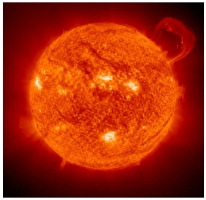

IntroductionWe often take our Sun for granted – it is our constant companion, day in and day out, and we literally would not be able to live without it. At a diameter of nearly 1.4 million kilometres, the Sun is massive compared to the Earth – over 100 times larger in diameter. It contains over 99% of the mass of all of the other objects in our solar system. Our Sun is just an average-sized star. Some stars are hundreds of times the diameter of our Sun, and many are only a tenth the size of our Sun. |

The Sun (Image: NASA)
|
The coreAt its core lies the engine that generates the light we see and the heat we feel. The temperatures here reach 15 million degrees. At these high temperatures and under the massive pressures at the core, hydrogen nuclei can fuse together to create helium. However, a helium nucleus is slightly lighter than the original hydrogen nuclei, and so a by-product of this fusion is that the Sun converts this tiny little bit of extra mass into energy – heat and light – obeying Einstein’s famous formula, E=mc². There are so many fusion reactions taking place every second however, that this amounts to a total of about 4 million tonnes of mass converted to energy every second – that’s a lot of energy released every second! This amount of the mass of the Sun that is ‘lost’ every second may seem alarming, but we need not panic – the Sun contains lots of hydrogen fuel and will be with us for at least another 4 billion years. |